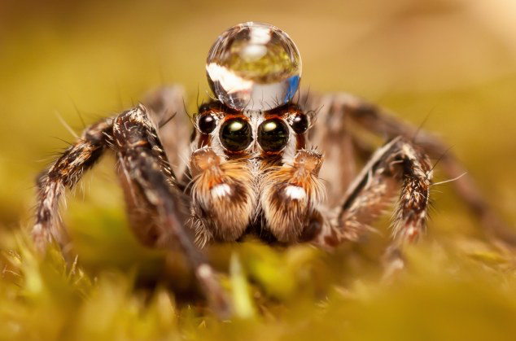
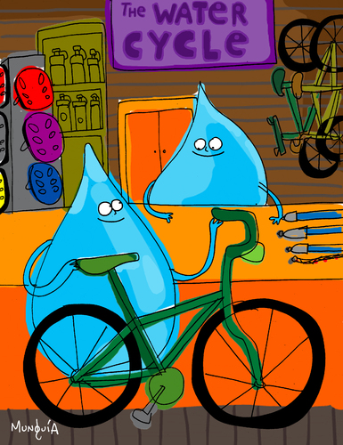
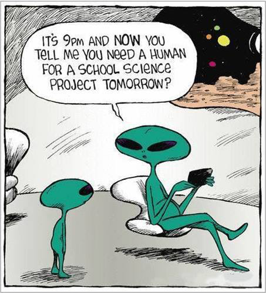

Jeremiah 10:13
When he utters his voice, there is a tumult of waters in the heavens,
and he makes the mist rise from the ends of the earth.
He makes lightning for the rain, and he brings forth the wind from his storehouses.
Student Notebook hyperlinks for module 5:
p. 63 in the SNB: link.apologia.com/ECPS2N/5.1 The Water Cycle: The Oceans by USGS
p. 63 in the SNB: link.apologia.com/ECPS2N/5.2 Seawater Composition
p. 67 in the SNB: link.apologia.com/ECPS2N/5.3 Pollution of Groundwater
Required Videos and Links:
NASA | Show Me the Water
The Hydrologic Cycle - Animated Infographic by US Water Systems
What Is Groundwater? by KQED Quest
Glacier Grey Torres del Paine (Chile) Calving Full HD
7 years of a glacier in a 1 minute video
How do clouds form? by the British Weather Met Office
Optional but Helpful:
All About Glaciers for Kids: How Glaciers Form and Erode to Create Landforms - FreeSchool
“Chasing Ice: Largest glacier calving ever filmed” Produced by Adam Lewinter & Exposure Lab
Vocabulary Flashcards on Quizlet
Module 5 flash cards


